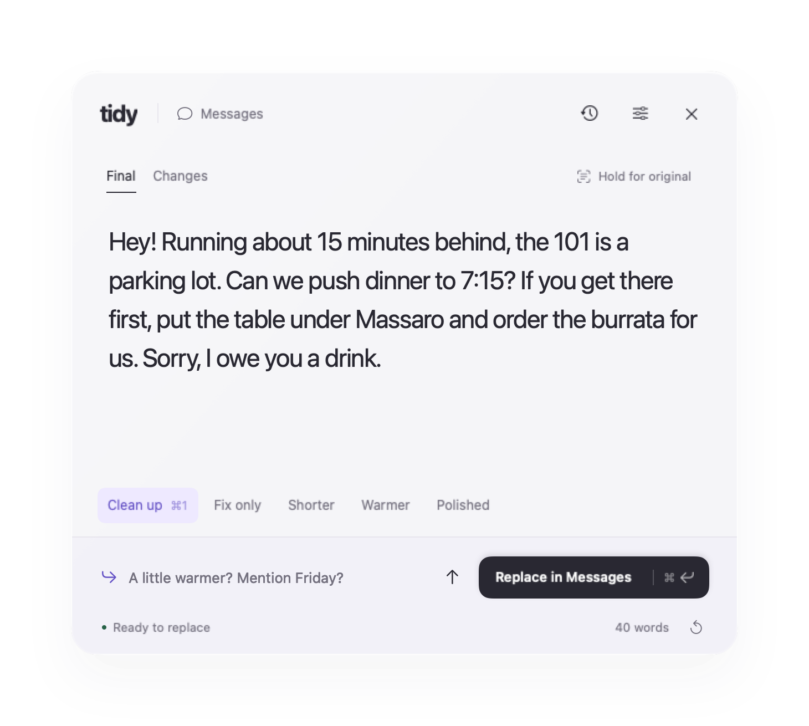
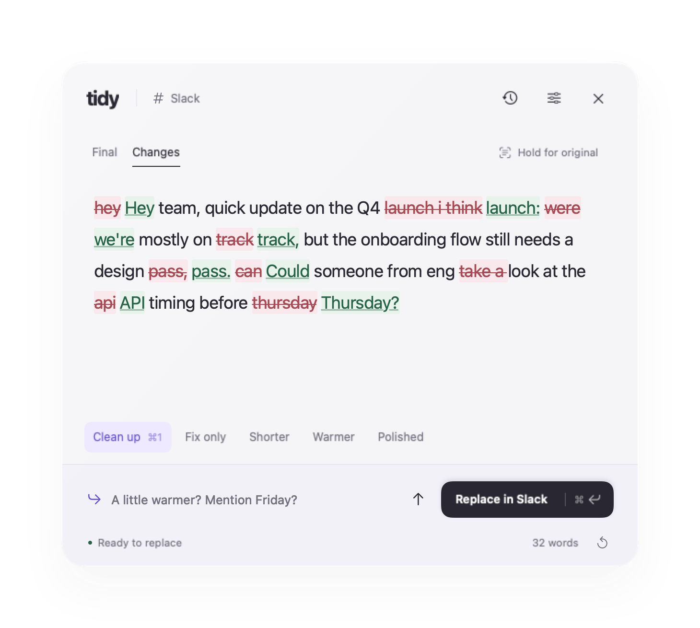

A menu bar app for Mac
Clean up a message without leaving it.
Select a draft in Mail, Messages, Slack or anywhere else and press ⌥⌘C. Claude rewrites it in a panel over the app you’re in. Press ⌘↩ and it replaces your selection.

Three keys, no copy-paste.
No chat window, no switching apps. Your draft never leaves the place you’re writing it.
-
hey can u send
Select your draft
In any app you write in: an email, a text, a Slack thread, a Notes page, a form in Chrome.
-
⌥⌘C
Tidy opens on top
A cleaner version streams in within about a second. Edit it, switch modes, or ask for a change.
-
⌘↩
It goes back in place
The new text replaces your selection, and your clipboard is put back the way it was.
Edits you can see, in a voice that’s yours.
Tidy fixes what needs fixing and shows you exactly what it touched.
-
See every change
canCould someone look at theapiAPI timing beforethursdayThursday? Removals are struck through, additions underlined. Hold for your original any time. -
A mode for the moment
Clean up Fix only, Shorter, Warmer and Polished, plus any you write yourself. Switch with ⌘1–9.
-
Refine in plain words
Type “a little warmer” or “mention Friday” and the draft is reworked, not rewritten from scratch.
-
Still sounds like you
Opt in and Tidy learns from the edits you make before you send, so the next cleanup needs fewer.
-
Fits the box
Set a character limit for an app, like 160 for texts, and Tidy keeps every rewrite under it.
-
Everything you sent, findable
A searchable history of your cleanups, kept on your Mac.

Your key, your Mac.
Tidy uses your own Anthropic API key, so you pay Anthropic directly for what you use. There’s no account to make and no Tidy server in the middle.
Privacy
- Your textGoes straight from your Mac to Anthropic’s API, and nowhere else.
- Your keyStored in your macOS Keychain.
- Your historySaved on your Mac only. Clear it any time.
- TrackingNone. The only other request is a daily check for updates on GitHub.
What you need
- A MacApple Silicon, macOS 14 Sonoma or later.
- An API keyFrom console.anthropic.com. Tidy asks for it on first launch.
- AccessibilitymacOS asks once. It lets Tidy copy your selection and paste the result.
Send the better version.
Free, and under a megabyte to download.